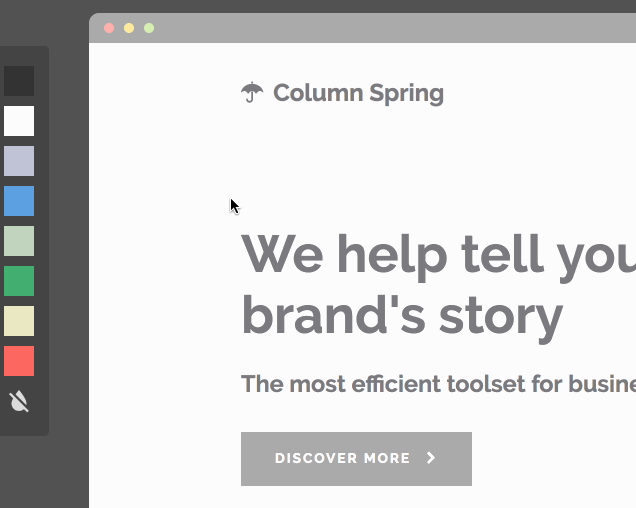
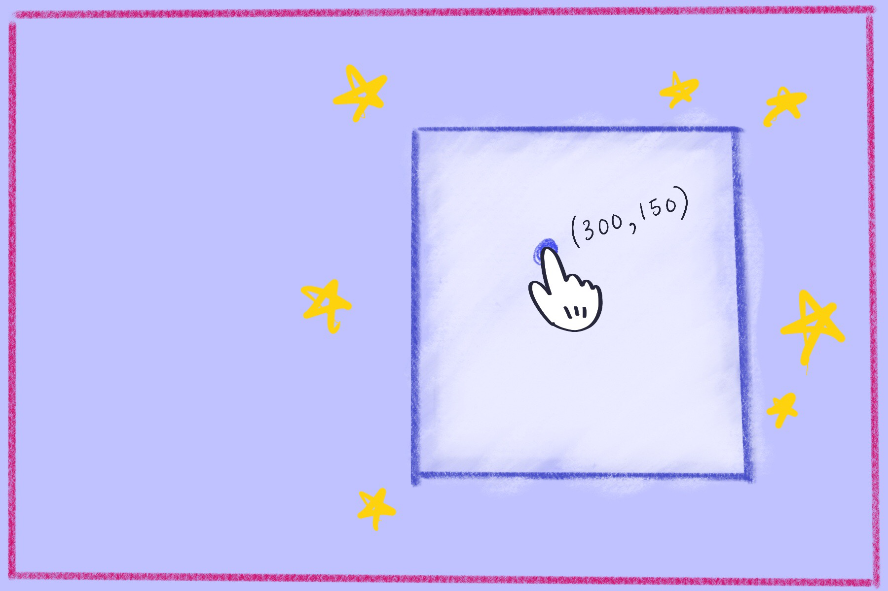
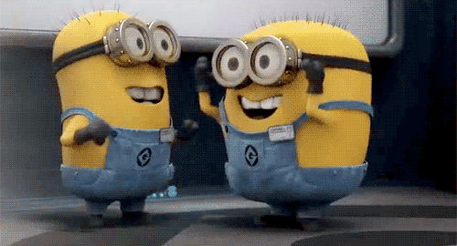
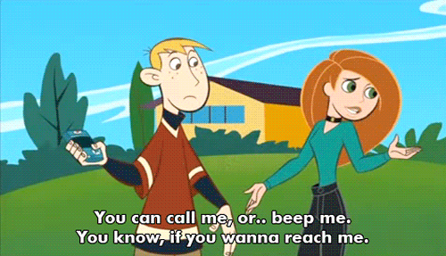

Draggable Elements with Vanilla JS
Lunching 'n Learning with Stef Liu
Draggable UI's
- File uploads
- Sorting/reordering elements
- Drag and drop to color

Simple CSS Concepts
- Draggable element - absolutely positioned
- Parent container the element is draggable within - relatively positioned
Section A: The basic steps
1. Get initial click position
1. Get initial click position (cont'd)
- Attach handler to mousedown event listener
-
Utilize
eventobject to get initial position - Set mousedown state
var isMouseDown = false;
function mouseDown(e) {
// set mousedown state
isMouseDown = true;
var mouseY = e.clientY;
var mouseX = e.clientX;
}
function mouseUp(e) {
isMouseDown = false;
}
elm.addEventListener("mousedown", mouseDown);
document.addEventListener("mouseup", mouseUp);
2. Get distance from initial click to element's top left corner

2. Get distance from initial click to
element's top left corner (cont'd)
- Find element's top left position relative to parent container
- Subtract element's top left coordinates from initial click's coordinates
// get elm top and left coordinates
var elmTop = elm.offsetTop;
var elmLeft = elm.offsetLeft;
// get diff from element top left to mousedown point
var diffY = mouseY - elmTop;
var diffX = mouseX - elmLeft;
3. As mouse moves, get new mouse position

3. As mouse moves, get new mouse position (cont'd)
-
Attach handler to mousemove event listener
- Handler should only be fired when mouse is clicked and moving
- Use mousemove
eventobject to calculate new mouse coordinates
function mouseMove(e) {
// if mouse is not clicked, return and do nothing
if (!isMouseDown) return;
// get new mouse coordinates
var newMouseY = e.clientY;
var newMouseX = e.clientX;
}
document.addEventListener("mousemove", mouseMove);
4. Determine new top left coordinates for element

4. Determine new top left coordinates for element (cont'd)
var newElmTop = newMouseY - diffY,
newElmLeft = newMouseX - diffX;
5. Move element to new calculated coordinates
5. Move element to new calculated coordinates (cont'd)
- Set the element's
topandleftproperties to new coordinates
elm.style.top = newElmTop + 'px';
elm.style.left = newElmLeft + 'px';
Welp. How do we keep the element from being
dragged outside the parent container?
Section B: Keep it in the container
1. Get parent container dimensions
var container = elm.offsetParent;
containerWidth = container.offsetWidth;
containerHeight = container.offsetHeight;
2. Get top & left element limit
- Top left limit: (0,0)
3. Check if element is within top & left container bounds
- If so, set coordinates to topmost and/or leftmost coordinates if outside of parent
// if elm is being dragged off top of the container...
if (newElmTop < 0) {
newElmTop = 0;
}
// if elm is being dragged off left of the container...
if (newElmLeft < 0) {
newElmLeft = 0;
}
4. Get the bottom and right element limit
- bottommost limit = container height - element height
- rightmost limit = container width - element width
5. Check if element is within
bottom & right container bounds
- If so, set coordinates to bottommost and/or rightmost coordinates
// if elm is being dragged off bottom of the container...
if (newElmTop > bottomLimit) {
newElmTop = bottomLimit;
}
// if elm is being dragged off right of the container...
if (newElmLeft > rightLimit) {
newElmLeft = rightLimit;
}
Let's see it in action.
The world is your oyster
See the Pen Move Me: draggable element without jQuery UI by Stephanie (@ramenhog) on CodePen.
Show me your stuff!
Ask me your questions!

Tweet at me: @ramenhog
Email me: stephofliu@gmail.com
Check out my site and CodePens for more tutorials & random code fun.